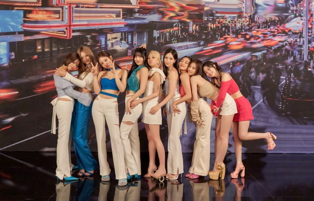

以下TWICE的事蹟:
- 2013–2015年：出道
- 2016年：歌曲大爆，年榜第一
- 2017年：日本出道
- 2018年：日本大爆，銷量斷層
- 2019年：逐漸轉型，鞏固粉絲
- 2020年：韓文正規二輯，日韓總銷量破千萬
- 2021年：英文單曲出道，日韓正規三輯
- 2022年：全員續約、四巡III、日語四輯、成員個人活動、迷你十一輯
- 2023年：英文先行曲、迷你十二輯、五巡、日單、MISAMO小分隊
TWICE的演藝發展，不只是突破很多新事物甚至成為了大勢女團之一，粉絲更是越來越多，她們的努力及進步大家都有看見。我想，未來有機會肯定要飛出國看九人玩整體演唱會，支持我的愛寶們。
--網頁設計師 高淑慧
如果您有時間，可以在維基百科條目上閱讀有關這個令人難以置信的人的更多信息。